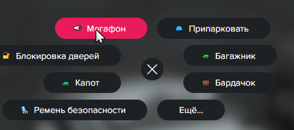

Процесс задержания
Порядок действий на угонке.
Когда вам приходит уведомление об угоне, вам необходимо отыграть данную ситуацию от начала до конца.
G → Мегафон → LSPD 1/2
 Или же/m Прижмитесь к обочине и заглушите двигатель. В случае неповиновения мы откроем огонь.
Если водитель не останавливается и пытается скрыться, то вы можете открыть огонь по автомобилю и начать погоню.Перед тем, как открыть огонь, нужно проиграть мегафон два раза.
Когда водитель остановился, необходимо проверить транспортное средство. Отыграйте в биндере/голосом следующие действия: Представьтесь и покажите свой жетон/удостоверение/бейджик./me достал(а) КПК из заднего кармана /do КПК в руках /me включил(а) КПК и зашел(ла) в полицейскую базу данных зарегистрированных автомобилей /do Номера скручены?
Если водитель отвечает "Нет.", отыграйте следующие действия:/me посмотрел(а) на номерной знак автомобиля и вбил(а) его в базу данных /do Через некоторое время база данных выдала всю информацию касательно автомобиля. /me внимательно ознакомился(лась) с информацией и убрал(а) КПК в задний карман
После этого в голосовой чат сообщите водителю, что автомобиль объявлен в угон и надевайте на него наручники. Начинайте проводить Процессуальные действия. Если водитель отвечает "Да.", то для начала спросите у него в /b, есть ли у него СС, если СС есть, попросите ссылку. Если СС нету, то вызовите администратора или попросите откатить ответ и ответить снова./me открыл(а) капот автомобиля /me осмотрел(а) подкопотное пространство авто /me посмотрел(а) на VIN номер и вбил(а) его в базу данных /me посмотрел(а) на код двигателя и вбил(а) его в базу данных /do База данных выдала всю информацию об автомобиле. /me внимательно ознакомился(лась) с ниформацией с экрана /me заблокировал(а) и убрал(а) КПК в карман
После этого в голосовой чат сообщите водителю, что автомобиль объявлен в угон и надевайте на него наручники. Начинайте проводить Процессуальные действия. Также бывают случаи, когда люди возят угнанные машины внутри фургона. Если вы видите метку на фургоне, то вам нужно отыграть, что вы нашли машину. Для этого:/me достал(а) КПК из заднего кармана и зашлел(ла) в реестр угнанных автомобилей /me перешел(а) на вкладку "GPS-трекинг" и начал(а) поиск машины /do Через некоторое время КПК выдал информацию о местоположении угнанного автомобиля. /me ознакомился(лась) с информацией в КПК, после чего заблокировал(а) его и убрал(а) в задний карман
После этого можете просить открыть машину и показать, что находится внутри. Далее проверяйте ТС начиная с самого начала. Статья за угон - УК 10.7Поиск по статьям
Скрипт найдет статью Уголовного, Административного или Дорожного кодексов по номеру или ключевому слову